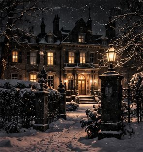
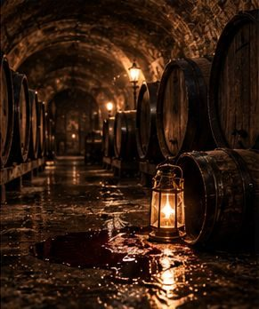
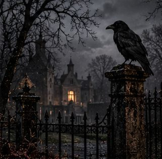

Mystery Spellen
Alle zaken spelen in je browser, op telefoon en computer. Geen account nodig; je voortgang blijft op je eigen apparaat.
Trek een lade open.
Lade I is gratis. Lade II gaat open met één pas. Lade III komt eraan.
Deze lade staat voor iedereen open. Kies een soort en begin.
Verhaalzaken
Verhoor de verdachten, zoek het bewijs, dien je aanklacht in.
Escape & 3D
Kijk zelf rond, kraak de sloten, vind de uitweg.

Logica & raster
Pen-en-papierpuzzels op het scherm. Eén oplossing, precies genoeg aanwijzingen.

De Zwarte Kolom
Drie nachten, drie doden, één rooster.

Het Pandjesboek
3.113 namen. Streep weg tot er één overblijft.

Hotel Winterlicht
Elf kamers, elf moordpuzzels, één gang.

De Nachtportier
Vijf plattegronden. Eén portier die te veel wist.
Cozy & bouwen
Rustig spelen zonder klok. Er zit wel een echte zaak onder.

Verzegelde dossiers. Eén pas opent alle 13 zaken in deze lade, eenmalig €3,99, geen abonnement.
Verhaalzaken
Verhoor de verdachten, zoek het bewijs, dien je aanklacht in.

Het Knipselarchief
Een koude zaak uit 1974. Alleen het archief weet het nog.

Huisje Texel
Zes vrienden, één huurhuis, een telefoon vol berichten. Wie vertrouw jij?
Laatst gezien 23:14
Haar telefoon. Haar laatste avond. Eén bericht dat zij nooit schreef.

Zeezicht
Een gesloten badhotel, storm, een lichaam in het zwembad.

Halvemaan
De dokter tekende hartfalen. De apotheek zegt iets anders.

Nachttrein 212
Eén nachttrein. Geen stops. Eén dode vóór de ochtend.

Nachtfrequentie
Iedereen verbergt iets. De radio speelt door.
Escape & 3D
Kijk zelf rond, kraak de sloten, vind de uitweg.

Het Lege Vat
Een wijnkelder, een lantaarn, een dode handelaar.
De Lichttafel
Het antwoord ligt tussen de fotoplaten.

Ravenhorst
Elk vertrek van het landhuis verbergt een raadsel.

De Schakelkamer
Codes en documenten uit een atelier, 1963.
Logica & raster
Pen-en-papierpuzzels op het scherm. Eén oplossing, precies genoeg aanwijzingen.
Cozy & bouwen
Rustig spelen zonder klok. Er zit wel een echte zaak onder.
Nieuwe zaken
Nieuwe zaken
Nieuwe zaken
Nieuwe zaken